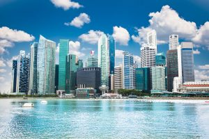
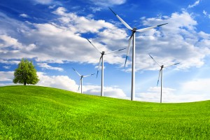

Amazon.com američka je tvrtka osnovana 1994. godine, najveća je svjetska internetska trgovina.Cyber napadi sve su češći i sofisticiraniji pa prijete svakoj poslovnoj djelatnosti.Facebook je internetska društvena mreža koju je 2004. godine osnovao Mark Zuckerberg.Izraz outsourcing u engleskome jeziku označuje davanje određenoga posla vanjskim dobavljačima.

Singapur zbog svog strateškog položaja zovu Gibraltarom Azije, a na malajskom jeziku 'Singapura' znači Lavlji Grad...Izraz start-up dolazi iz engleskoga poslovnoga nazivlja i označuje tvrtku koja ima razvojni potencijal.

Vjetrenjače funkcioniraju na način da kinetičku energiju vjetra pretvaraju u električnu energiju.U svakom poslu trebamo težiti prema vrhu."Win-win situacija" opisuje pozitivan osjećaj uspješno dovršenog pregovora za obje uključene strane.Svaka tvrtka treba težiti prema svjetskom tržištu